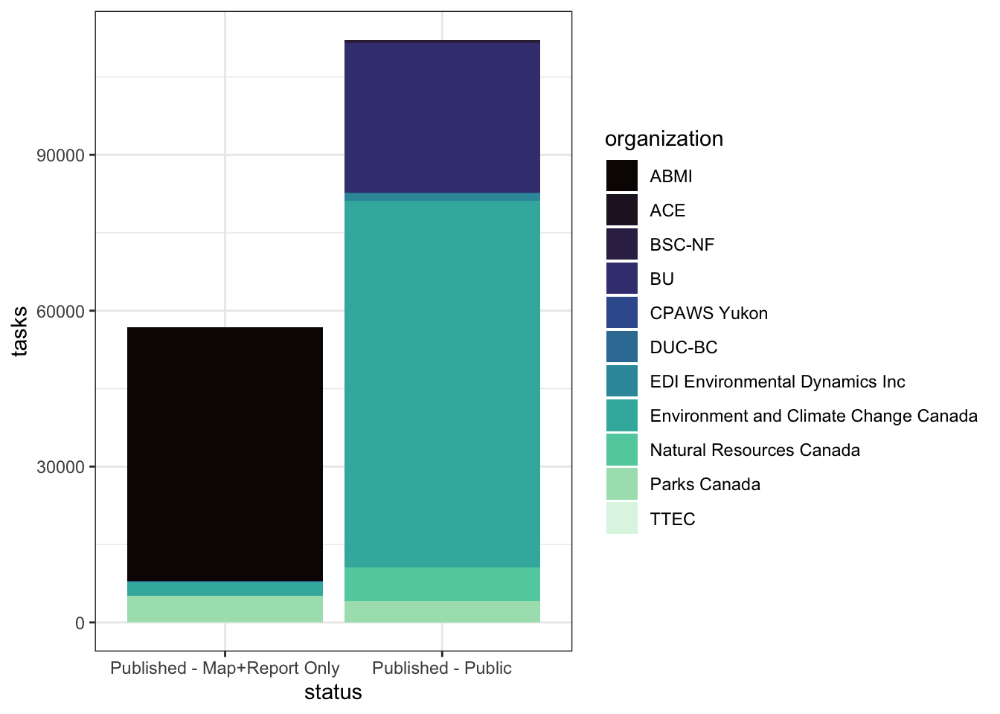

WildTrax: an open platform for the management, storage, processing, sharing and discovery of avian data
Abstract
As environmental sensors become essential tools for monitoring and assessing trends in bird populations, their effective use depends on robust systems for managing the large datasets they generate. WildTrax is a web-based platform designed to manage, store, process, share, and discover environmental sensor data at local to international scales. By enabling researchers to address broad-scale ecological questions through novel analytical approaches, WildTrax strengthens the broader network of avian data, fostering collaboration and enhancing data sharing to support bird conservation in Canada.
Context and rationale
Birds as ecological indicators
Birds have long been recognized as reliable ecological indicators due to their sensitivity to environmental changes, broad distribution across ecosystems, and measurable population dynamics. They can signal shifts in ecosystem health, function, and biodiversity, providing critical insights for conservation and management. However, there are challenges in their application as indicators, including spatial, seasonal, and habitat biases, as well as insufficient consideration of statistical uncertainty and temporal autocorrelation in multi-species bird indicators (Gregory et al. (2003), Fraixedas et al. (2020)). Addressing these gaps is crucial for improving their efficacy in informing Canada’s commitments under the Global Biodiversity Framework. Birds are also valuable indicators because they occupy diverse niches, have well-studied life histories, and often correlate with the health of other taxa (Fleishman et al. (2005)). Their utility spans ecosystem monitoring, habitat quality assessment, and gauging the impact of environmental stressors such as land use change, climate change, and pollution (Niemi et al. (1997), Mekonen (2017)). Advances in statistical modeling now allow for better integration of uncertainty, phylogenetic relationships, and temporal autocorrelation, enhancing the reliability of bird-based indicators (Fraixedas et al. (2020)).
Environmental sensors and big data
Environmental sensors, such as autonomous recording units (ARUs) and remote camera traps, are reshaping biodiversity monitoring by providing continuous, high-resolution, and large-scale data collection. These technologies mitigate many of the limitations inherent in traditional field surveys, offering reliable, replicable, and non-invasive methods for observing bird populations and their habitats. ARUs are particularly effective for capturing vocalizations, enabling detailed identification and temporal analysis of species presence, abundance, and community dynamics over time (Bock and Webb (1984)). Remote camera traps complement these efforts by monitoring species activity and interactions across diverse habitats. In an era where ecological science increasingly overlaps with the data-driven revolution, the integration of such sensors contributes to the accumulation of extensive datasets, often categorized as “big data” (Hampton et al. (2013)). These datasets, characterized by their volume, variety, veracity, and velocity, frequently exceed the capacities of traditional tools and demand innovative approaches for analysis (Farley et al. (2018)). Platforms like WildTrax exemplify the potential of centralized systems to standardize, integrate, and share sensor-derived data, fostering cross-disciplinary collaborations and enabling comprehensive insights into biodiversity patterns. The transformative power of environmental sensors lies in their ability to address biases and gaps in conventional monitoring while enabling advanced modeling techniques that incorporate temporal autocorrelation, spatial heterogeneity, and even phylogenetic relationships among species (Peters et al. (2014)). However, as the demand for scalable and timely ecological insights grows, so do the challenges of big data ecosystems. Ensuring data quality, equitable access, and long-term preservation requires robust socio-technical frameworks, as emphasized by Shin and Choi (2015). Additionally, the computational demands of analyzing these large datasets often necessitate a combination of machine learning techniques and traditional ecological models. By integrating diverse datasets and harnessing the opportunities presented by big data, environmental sensors are poised to bridge the gap between raw ecological data and actionable conservation strategies. These tools not only enhance our ability to monitor and manage ecosystems but also contribute to the broader goal of ensuring ecological sustainability in an increasingly data-driven world (Nathan et al. (2022)).
Collaborative data makes collaborative action
Effectively leveraging birds as ecological indicators hinges on robust, collaborative, and accessible data management frameworks. Platforms like WildTrax play a pivotal role in this landscape by integrating environmental sensor data into a centralized system that bridges gaps across disciplines and scales. WildTrax enables researchers and decision-makers to harmonize diverse datasets, ensuring consistency and quality in biodiversity monitoring efforts (Stephenson and Stengel (2020)). It supports advanced analyses for species- and community-level assessments, transforming raw environmental data into actionable insights that inform conservation strategies and policy development (Fox et al. (2017)). By addressing limitations in traditional methodologies and promoting data-sharing initiatives, platforms like WildTrax contribute to a more cohesive understanding of ecological trends (Buxton et al. (2021)). Moreover, such systems foster collaboration among stakeholders, helping to align conservation priorities at regional, national, and even global scales (Kartez and Casto (2008)). Through these efforts, WildTrax exemplifies the potential of integrated data systems to catalyze evidence-based biodiversity conservation and ecological management.
Infrastructure and design
Data management and processing
# Use DD to get Map Only. Start with a few common species
species_list <- c('White-throated Sparrow','Yellow Warbler','Swainson\'s Thrush', 'Tennessee Warbler','American Redstart','American Robin','American Crow', 'Red-eyed Vireo', 'Yellow-rumped Warbler')
map_only <- wt_dd_summary('ARU', species = species_list, boundary = NULL)[[1]] |>
select(projectId) |>
distinct()Currently searching as a logged in user.map_only_not_in_public <- setdiff(map_only$projectId, all_public_projects$project_id)
map_only |>
filter(projectId %in% map_only_not_in_public)# A tibble: 1 × 1
projectId
<int>
1 NAAnalysis
Acknowledgements
We gratefully acknowledge the contributions of our collaborators and supporters, including
References
Bock, Carl E, and Betsy Webb. 1984. “Birds as Grazing Indicator Species in Southeastern Arizona.” The Journal of Wildlife Management 48 (3): 1045–49.
Buxton, Rachel T, Joseph R Bennett, Andrea J Reid, Charles Shulman, Steven J Cooke, Charles M Francis, Elizabeth A Nyboer, et al. 2021. “Key Information Needs to Move from Knowledge to Action for Biodiversity Conservation in Canada.” Biological Conservation 256: 108983.
Farley, Scott S, Andria Dawson, Simon J Goring, and John W Williams. 2018. “Situating Ecology as a Big-Data Science: Current Advances, Challenges, and Solutions.” BioScience 68 (8): 563–76.
Fleishman, Erica, James R Thomson, Ralph Mac Nally, Dennis D Murphy, and John P Fay. 2005. “Using Indicator Species to Predict Species Richness of Multiple Taxonomic Groups.” Conservation Biology 19 (4): 1125–37.
Fox, Helen E, Megan D Barnes, Gabby N Ahmadia, Grace Kao, Louise Glew, Kelly Haisfield, Nur Ismu Hidayat, et al. 2017. “Generating Actionable Data for Evidence-Based Conservation: The Global Center of Marine Biodiversity as a Case Study.” Biological Conservation 210: 299–309.
Fraixedas, Sara, Andreas Lindén, Markus Piha, Mar Cabeza, Richard Gregory, and Aleksi Lehikoinen. 2020. “A State-of-the-Art Review on Birds as Indicators of Biodiversity: Advances, Challenges, and Future Directions.” Ecological Indicators 118: 106728.
Gregory, Richard D, David Noble, Rob Field, John Marchant, M Raven, and DW Gibbons. 2003. “Using Birds as Indicators of Biodiversity.” Ornis Hungarica 12 (13): 11–24.
Hampton, Stephanie E, Carly A Strasser, Joshua J Tewksbury, Wendy K Gram, Amber E Budden, Archer L Batcheller, Clifford S Duke, and John H Porter. 2013. “Big Data and the Future of Ecology.” Frontiers in Ecology and the Environment 11 (3): 156–62.
Kartez, Jack D, and Molly P Casto. 2008. “Information into Action: Biodiversity Data Outreach and Municipal Land Conservation.” Journal of the American Planning Association 74 (4): 467–80.
Mekonen, Sefi. 2017. “Birds as Biodiversity and Environmental Indicator.” Indicator 7 (21).
Nathan, Ran, Christopher T Monk, Robert Arlinghaus, Timo Adam, Josep Alós, Michael Assaf, Henrik Baktoft, et al. 2022. “Big-Data Approaches Lead to an Increased Understanding of the Ecology of Animal Movement.” Science 375 (6582): eabg1780.
Niemi, Gerald J, Joann M Hanowski, Ann R Lima, Tom Nicholls, and Norm Weiland. 1997. “A Critical Analysis on the Use of Indicator Species in Management.” The Journal of Wildlife Management, 1240–52.
Peters, Debra PC, Kris M Havstad, Judy Cushing, Craig Tweedie, Olac Fuentes, and Natalia Villanueva-Rosales. 2014. “Harnessing the Power of Big Data: Infusing the Scientific Method with Machine Learning to Transform Ecology.” Ecosphere 5 (6): 1–15.
Shin, Dong-Hee, and Min Jae Choi. 2015. “Ecological Views of Big Data: Perspectives and Issues.” Telematics and Informatics 32 (2): 311–20.
Stephenson, PJ, and Carrie Stengel. 2020. “An Inventory of Biodiversity Data Sources for Conservation Monitoring.” PLoS One 15 (12): e0242923.